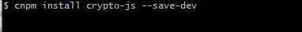
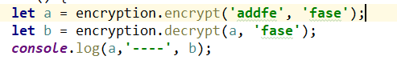

1、在vue中安装crypto-js

备注：千万不要安装错了，中间是 ‘-’连接，不是‘.’
2、在项目的工具文件夹中新建 encryption.js，用于定义加密和解密的方法，方便调用
import Vue from 'vue'
import CryptoJS from 'crypto-js'
export default {
//加密
encrypt(word, keyStr){
keyStr = keyStr ? keyStr : 'abcdefgabcdefg12';
let key = CryptoJS.enc.Utf8.parse(keyStr);//Latin1 w8m31+Yy/Nw6thPsMpO5fg==
let srcs = CryptoJS.enc.Utf8.parse(word);
let encrypted = CryptoJS.AES.encrypt(srcs, key, {mode:CryptoJS.mode.ECB,padding: CryptoJS.pad.Pkcs7});
return encrypted.toString();
},
//解密
decrypt(word, keyStr){
keyStr = keyStr ? keyStr : 'abcdefgabcdefg12';
var key = CryptoJS.enc.Utf8.parse(keyStr);//Latin1 w8m31+Yy/Nw6thPsMpO5fg==
var decrypt = CryptoJS.AES.decrypt(word, key, {mode:CryptoJS.mode.ECB,padding: CryptoJS.pad.Pkcs7});
return CryptoJS.enc.Utf8.stringify(decrypt).toString();
}
}备注：第一个参数是待加密的字符串，第二个参数是aes加密需要用到的16位字符串的key
如果需要对一个对象加密，需要先使用JSON.stringify()将对象转为字符串
3、测试：在需要加密的组件中，引用 encryption.js

打印出来： tqzQi/1VKC9mV8EZjfu/tg== ---- addfe